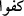

hâlde “ şeklinde sarâhaten ifâde edilmesi, doğma ve çocuk yapmanın birbirini
gerektirdiğine işâret ederek bir önceki ifâdeyi pekiştirmek ve te’kîd etmek içindir.
Çünkü mâlûm olduğu üzere, ancak çocuk yapabilen doğar, aksi geçerli değildir.
Doğmadığını kabul etmek, doğurmadığını da kabul etmektir.
Keşfü’l-esrâr’da şöyle geçer: önce zikredilmiştir. Çünkü Allah’ın çocuğu var
olduğunu söyleyen pek çok kâfir vardır, ancak onun birinin çocuğu olduğunu söyleyen
yoktur.
Farsça tefsirde demiştir ki: Üzeyir Allah’ın oğludur diyen Yahudilere, ise
Îsâ ilâhtır, diyen Hrıstiyanlara reddiyedir.
Ebu’l-Leys demiştir ki: kendisine mîrâsçı olacak bir çocuk var olmadı,
ise kendisi için mülküne vâris olacağı bir baba var olmadı, mânâsına gelir.
4. Onun hiçbir dengi yoktur.
“ Arapça’da “/ ” demek  demektir ki, bu onun
demektir ki, bu onun
benzeridir, mânâsına gelir. “ demek de gibi o falancaya mümâsil, benzer
oldu anlamındadır. “” câr-mecrûru e mütealliktir, sonra gelmesi gerekirken önce
gelmiştir. Maksad Allah Teâlâ’nın zâtından denkliği kaldırmaktır. Mânâ şöyle olur:
“Hiçbir kimse ona denk olmadı, benzer olmadı. Bilâkis o denkleri yaratandır.”
“Küfüven” kelimesi, eş sâhibi olmayı nefyetmek için “ kökünden de gelmiş
olabilir. “Kâne”nin isminin sonradan gelmesi ise âyet sonlarındaki fâsılalara riâyet
etmek içindir. Üç cümlenin atıf harfiyle birbirine bağlanmasının sebebi, her bir
cümlenin, benzerliğin üç türünden birini nefy etmesi olabilir. Burada üç farklı cümle
şeklinde gelmiş tek bir cümle söz konusudur.
Kâşânî demiştir ki: Onun ahadiyyet hüviyyeti kesret ve inkısâmı kâbil olmayıp
vahdet-i zâtiyye de başkasıyla kıyaslanamaz. Çünkü vücûd-ı mutlak dışındakiler sâdece
adem-i mahzdan ibârettirler. Böyle olunca da O’na hiçbir varlık denk olamaz. Çünkü
adem-i sırf vücûd-ı mahz’a denk değildir.
Kâşifî demiştir ki: Bu âyet, “O’nun dengi ve misli vardır” diyen Arap Mecûsî ve
müşriklerini reddetmektedir. Demişlerdir ki bu sûredeki her bir âyet kendinden önceki
âyetin tefsiridir. Meselâ derlerse ki “men hüve/o kimdir?” sen, “Ahad” dersin. “Ahad
kimdir?” dediklerinde “Samed” dersin. “Samed kimdir?” derlerse, sen de “lem yelid
velem yûled” dersin. “Lem yelid velem yûled kimdir” diye sorarlarsa “velem yekün
lehü küfüven ahad” dersin.
Bâzıları da demişlerdir ki: Vâlihîn’in/kendinden geçenlerin kâşifi/perdeleri kaldıran
“Hû” sözüdür. Muvahhidîn’in kâşifi “Allah” lafzı, Âriflerin kâşifi “Ahad” lafzı,